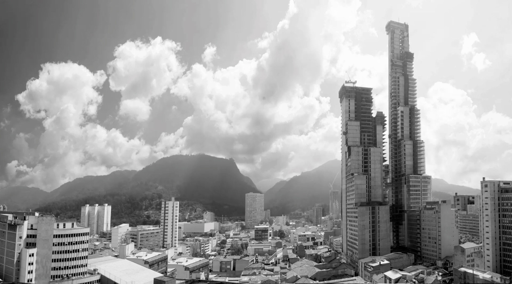

ACTUALIDAD INFORMATIVA
Entre calles, el ambicioso proyecto que sería el más alto de la ciudad. Será el rascacielos mas alto de la región, ubicado sobre la intersección de la Avenida 19 con la Carrera Séptima.
Ya está en Bogotá la construcción de las Torres Atrio. Será uno de los complejos arquitectónicos mas grandes del país, se ha proyectado que tenga tres usos: oficinas, comercio y hotel.

Bd Bacata, finaliza su construcción. Finalizó su construcción de la estructura del Bd Bacatá, la entrega final de la monumental obra está prevista para el segundo semestre del 2016.
Torres del Parque, cerca de cumplir 50 años desde su construcción, la obra realizada por Rogelio Salmona a comienzos de los 60 sigue siendo una de las obras insignia de la arquitectura en Bogotá.
- © 2016 Johan Sebastián Hernández Ramos. Todos los derechos reservados. Gráfica Interactiva